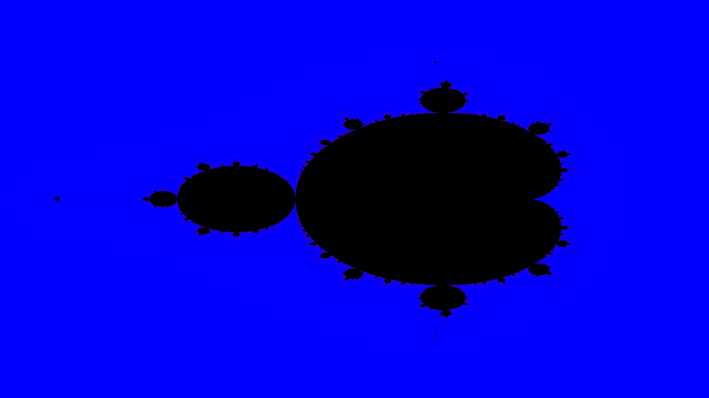

Generador de Fractales
Renderizador paralelo y concurrente de Mandelbrot

Sobre el Proyecto
Este proyecto consiste en un renderizador concurrente y paralelo del fractal de Mandelbrot desarrollado en Java. Fue creado como parte de un curso de Programación Concurrente y Paralela, con el objetivo principal de comparar diversas estrategias de paralelización en una carga de trabajo dependiente de la CPU.
Características Principales
- Alto Rendimiento Computacional: Optimizado para cargas de trabajo extensivas en CPU calculando funciones iterativas complejas.
- Paralelismo: Implementación de diferentes modelos de ejecución concurrente, destacando arquitecturas multinúcleo.
- Benchmarking: Útil como herramienta de prueba ("benchmark") para analizar la escalabilidad, dado que el Conjunto de Mandelbrot es un problema "vergonzosamente paralelo" (embarrassingly parallel), donde el valor de cada píxel puede calcularse de manera independiente.
Desarrollo y Aprendizaje
Este desarrollo permitió profundizar en el modelo de hilos de Java, el framework Fork/Join y los flujos paralelos (`parallel streams`). Al visualizar el costo de sincronización frente a la ganancia por ejecución paralela, el renderizador funcionó como un laboratorio excelente para observar empíricamente la Ley de Amdahl y entender cómo aprovechar el hardware moderno.